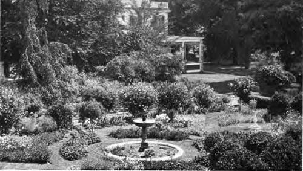

Chapter II. Flower Gardens Of Many Kinds
Description
This section is from the book "Flower Gardening", by H. S. Adams. Also available from Amazon: Flower gardening.
Chapter II. Flower Gardens Of Many Kinds
From the days of the ancients, there have been various kinds of gardens. And in this age of specialization there are more and more kinds as the years go by. Already the kinds are so many that life and purse would seldom be long enough to secure their possession, even were such a multiplicity of gardens to be desired.
The advantage of these numbers is that they offer infinite suggestion for the making of a garden along composite, as well as specialized, lines. A bit here and a bit there, molded into shape by personality, may be precisely the material needed to create a pleasance that asks to be called by no more definite name than the garden.
After all, taking the human race by and large, this is the best of the many kinds of gardens— just a garden and yet one thoroughly thought out in its relation to the house. A variation for every individual is possible, there being no limit to the changes to be rung. As for beauty, there is ample room for all that any one cares to put into it.
Nor need such a garden be nondescript; if the borrowing and adapting of ideas is judicious, the garden will have a personal character—in nine cases out of ten better than a slavish reproduction of one of the endless number of kinds. It is better in point of appropriateness and better in point of enjoyment.
To borrow and adapt judiciously is relatively easy if common sense be kept in the foreground. Art matters less than good taste and need not seriously disturb the amateur so far as strict adherence to set rules, and all that, is concerned. These rules are for the professional makers of gardens bearing high-sounding names.
The more a garden is so broken up that the eye cannot grasp all at once, the more kinds may be drawn upon. At the end of the main path there is, perhaps, a stone bench backed by small evergreens; this from an Italian garden. A curved bypath discloses a little Japanese scheme, a bank of thyme is from a Shakspere garden, while an herb garden suggested the walk lined with burnet.
This sort of garden-making is always worth doing and the beauty of it is that the working out of the idea may be of gradual growth. On the other hand, a named garden is not worth while at all unless it is substantially what it purports to be. That means careful study, to the end that there may be consistency of design and materials.
"This is the best of the many kinds of gardens—just a garden and yet one thoroughly thought out in its relation to the house".
On top of the study will come much labor and, more likely than not, much expense.
Of the four kinds of gardens that are classed by national style rather than the plants grown, the Italian is the acme of formality; nothing is unordered It is the Renaissance perfection of the ancient Roman idea of a garden that not only was symmetry itself but was a part of a larger scheme of symmetry as represented by the villa— using the word in its old sense of an estate rather than merely a house. The elaborate design bears a distinct relation to the house, yet is quite complete in itself. There are terraces—which may be of monumental proportions—if the opportunity presents itself—and much topiary work, ornamental stone and statuary. Pools and running water also figure prominently in it.
A garden sufficiently Italian to be so called is perfectly feasible on a small place, if it conforms to the architecture of the house and there is a sufficient slope to permit of three terraces. Modification may be quite extreme. Flower beds of set design and neatly edged, with gravel walks, are more important to the plan than lawn spaces. Trees should close it in on three sides, that isolation may bring out its individuality. Clipped hedges may be made to take the place of stone balustrades. The red cedar is a fair substitute for cypress, while very good reproductions of antique garden furnishings are comparatively inexpensive. With these two materials, in fact, a short path could be converted into what it would be permissible in the intimacy of home to name an Italian garden.
Few will care to carry consistency beyond this compromise; for the more one studies Italian gardens the more one inclines to the view that to the average American gardener some part is of greater value than the whole. Perhaps it is only a group of cypresses in the Villa Albani, Rome, that suggests how to plant some red cedars standing out against the sky. Or the plan of the Villa Lante, at Bagnaia, is just the thing from which to adapt a parterre design, or the view up the terraces to the palace at Villa d'Este, Tivoli, the solution of a sloping rear-yard problem, or the Hill Walk of the Boboli Gardens, Florence, the pattern of a smaller scheme with a modest gateway. None, in the making of gardens, need fear to look too high; perhaps the Hanging Gardens of Babylon, as pictorially imagined, may furnish the very key to the planting of a cottage yard that is so hilly as to require a series of retaining walls quite close together.
French gardens have formality, too, but there are long vistas—which the Italian style does not call for, though they are not necessarily lacking. For these vistas there are avenues, sometimes with clipped trees; and there are broader stretches of water and more spouting fountains than in the gardens of Italy.
A reduction of the garden at Fontainebleau to very moderate proportions would provide an excellent model for a French garden. Here the square pool has four wide approaches and the surrounding flower beds are set in the turf. There is a good garden suggestion, too, in the "Isle of Love" at Chantilly; this for a short vista of flowers and water. Another, for box-lined parterres, will be found in the garden of the Grand Trianon, at Versailles, and still another, for a paved court, in the Orangery at the same place.
Continue to: